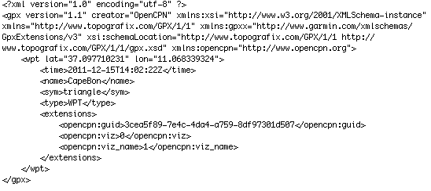
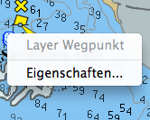
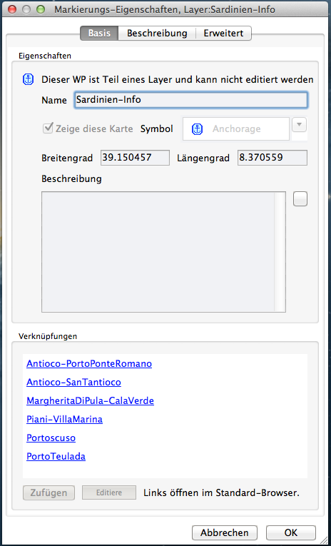
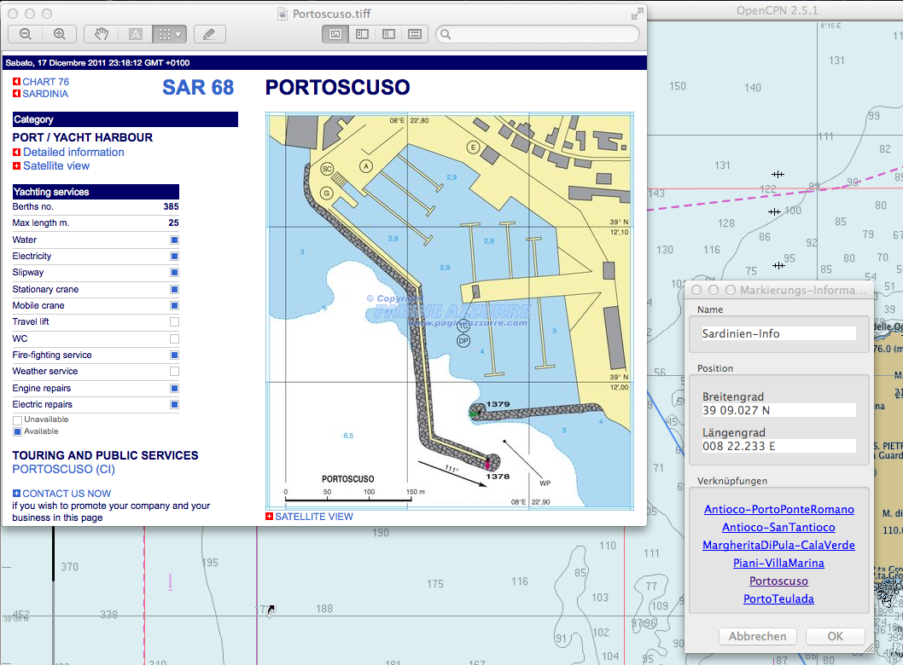

Anhang
Abkürzungen
Einige Erläuterungen zu oft verwendeten Abkürzungen.
Wie verwendet man Layer?
Eine Schritt-für-Schritt Anleitung zur Erweiterung von OpenCPN mit persönlichen Daten.
Windstärken
Informationen zu Windstärken.
Kleine Helferlein
Hier soll eine Sammlung kleiner Hilfen entstehen.
Abkürzungen
Viele Abkürzungen basieren auf anglo-amerikanischen Normen wie NMEA oder anderen englisch-sprachigen Begriffen. Daher hier eine kleine Zusammenstellung ohne Anspruch auf Vollständigkeit, z.B. sollte das internationale (Funk-)Buchstabier-Alphabet an anderer Stelle zu finden sein.
| Abkzg. | englisch | Erläuterung |
|---|---|---|
| AWA | Apparent Wind Angle | Winkel des scheinbaren Winds zu einem fahrenden Schiff in dessen Längsachse |
| AWS | Apparent Wind Speed | Windgeschwindigkeit relativ zum Boot |
| BS | Boat Speed | Geschwindigkeit des Bootes durchs Wasser |
| BTN | Bearing To Next | Kompaßkurs zum nächsten Wegpunkt der Route |
| CAPE | Convective Available Potential Energie | Maß für die zur Konvektion (vertikale Luftmassenbewegung) zur Verfügung stehende Energie (J/kg) |
| CD | Current Direction | Strömungs-Richtung |
| Clipboard | Clipboard | Zwischenablage (im Speicher) |
| CNM | Course to Next Mark | Kurs zum nächsten Wegpunkt |
| COG | Course Over Ground | Kurs eines Schiffes relativ zum Land (über Grund) |
| CPA | Closest Point of Approach | Ort der dichtesten Annäherung |
| CRS | Course | Kompaß-Richtung des Bootes durchs Wasser |
| CS | Current Speed | Strömungs-Geschwindigkeit |
| DBK | Deepth Below Keel | Wassertiefe gemessen von unterstem Punkt des Kiels |
| DBS | Deepth Below Surface | Wassertiefe gemessen von Wasseroberfläche oder Wasserlinie des Schiffs |
| DBT | Deepth Below Transducer | Wassertiefe gemessen vom Geber (Schwinger) unter dem Schiff, nicht justiert |
| DFT | Current Drift | Strömungsgeschwindigkeit in Knoten |
| DNM | Distance to Next Mark | Entfernung zum nächsten Wegpunkt |
| DTD | Distance To Destination | Entfernung zum Zielendpunkt, evtl. auch Gesamtentfernung einer Route mit mehreren Wegpunkten |
| DTN | Distance To Next | Entfernung zum nächsten Wegpunkt auf der Route |
| ETA | Expected Time of Arrival | Erwartete Ankunftszeit |
| ETAD | Expected Time of Arrival at Destination | Erwartete Ankunftszeit am Endziel |
| ETAN | Expected Time of Arrival to Next | Erwartete Ankunftszeit am nächsten Wegpunkt |
| ETED | Expected Time Enroute to Destination | Erwartete Reisezeit zum Ziel |
| ETEN | Expected Time Enroute to Next | Erwartete Reisezeit zum nächsten Wegpunkt |
| ETS | Expected Time of Sailing | Erwartete Abfahrtszeit |
| GWD | Ground Wind Direction | Kompaß-Richtung aus der der Wind über der Erde weht |
| GWS | Ground Wind Speed | Windgeschwindigkeit in Knoten über der Erde |
| HDG | Heading | Kompaß-Richtung in die der Schiffsbug weist |
| LMT | Local Mean Time | Lokale Ortszeit |
| MOB | Man Over Board | Mann über Bord |
| POI | Point Of Interest | Markierung, Wegpunkt |
| POS | Position | Position |
| RDA | Rudder Angle | Ruder-Winkel |
| ROT | Rate Of Turn | Drehrate |
| SDA | Set and Drift Angle | Eingabe- und Driftwinkel, verwendet in einem kombinierten Instrument |
| SDD | Set and Drift Direction | Eingabe- und Driftrichtung, verwendet in einem kombinierten Instrument |
| SET | Current Set | Kompaß-Richtung in die die Tide läuft |
| SOG | Speed Over Ground | Geschwindigkeit eines Schiffes relativ zum Land (über Grund) |
| STW | Speed Through Water | Geschwindigkeit durch Wasser (NMEA-fähiger Speedsensor am Boot erforderlich) |
| TCPA | Time to Closest Point of Approach | Zeitdauer bis zur dichtesten Annäherung |
| TWA | True Wind Angle | Winkel des wahren Windes relativ zur Schiffs-Längsachse |
| TWD | True Wind Direction | Kompaß-Richtung aus der der wahre Wind kommt |
| TWS | True Wind Speed | Windgescheindigkeit relativ zu einem stationären Punkt |
| VMG | Velocity Made Good | Geschwindigkeit des Schiffes zum Ziel, gemessen auf einer Linie vom Schiff zum Ziel |
| VTW | Velocity Through Water | Geschwindigkeit des Schiffes durchs Wasser |
| WP | Way Point | Wegpunkt |
| XTE | Cross Track Error | Kürzeste Entfernung von der Schiffsposition zur nächsten Routenlinie |
Einige Abkürzungen können ein hinten angestelltes "M" haben zur Bezeichnung als "magnetisch", z.B. HDGM statt nur HDG. Ohne "M" ist der wahre Kurs gemeint.
Für einige englische Abkürzungen werden auch deutsche Abkürzungen verwendet. Da diese oftmals nicht einheitlich sind, kann es zu Mißverständnissen
führen.
Layer
Mit "Layer" ist die Überlagerung von eigenen Daten in der Karte gemeint. Oder anders ausgedrückt, eine weitere Informations-Schicht auf der Karte mit Ihren eigenen Informationen kann mit einem "Layer" erzeugt werden.
Die derzeitige Einbettung eines Layers in OpenCPN setzt allerdings etwas Handarbeit voraus. Wünschenswert wäre hier ein entsprechendes Plugin, das jedoch noch nicht zur Verfügung steht. Daher hier eine schrittweise Anleitung, mit der auch Anwender ohne Programmierkenntnisse zurecht kommen sollten.
Unter dem Kapitel Routenmanager hatten wir bereits gesehen, daß es dort eine Lasche "Layer" gibt. Dort ist auch der weitere Umgang mit Layern erklärt, der daher hier nicht wiederholt werden soll. Hier geht es nun um die Erstellung eines Layers.
Voraussetzungen sind hierzu ein vorhandenes Verzeichnis "layers", siehe unter Routenmanager, Daten, die im Layer mit sogenannten Links (Verweise) eingebettet werden sollen, ferner der gesetzte Haken in den OpenCPN Einstellungen unter der Lasche "Sonstiges" bei "Layer direkt anzeigen" und ich empfehle in den Einstellungen von OpenCPN unter der Lasche "Sonstiges" auch die Breiten-/Längen-Anzeige auf Dezimalgrad zu setzen, weil es so einfacher ist, direkt in der GPX Datei die Werte evtl. zu verändern.
Die einzubettenden Daten können Links zu Internet-Seiten sein (nicht empfehlenswert für Unterwegs) oder Links zu Daten, die irgendwo auf der Festplatte mal gesammelt wurden. Das können z.B. Kartenberichtigungen, Leuchtfeuer-Informationen, Bilder, Hafenpläne usw. sein. Selbst die Umrißlinien von Papierkarten, die noch an Bord sind, lassen sich als Layer darstellen.
Schritt 1
Wir erstellen zunächst wie üblich eine Markierung (Wegpunkt) mit dem Rechts-Klick Menü am gewünschten Ort, an dem wir das Symbol haben wollen, mit "Neue Markierung einfügen".
Dann geben wir der Markierung einen sinnvollen Namen und ein neues Symbol, das die Layer-Markierung von anderen Markierungen unterscheiden soll. Dazu nehmen wir nochmals das Rechts-Klick Menü
auf der neuen Markierung mit dem Punkt "Markierungs-/WP-Eigenschaften". Im Dialogfenster vergeben wir den Namen und ein neues Symbol.
Tip: Wurde in den OpenCPN Einstellungen unter Lasche "Sprache/Schrift" für das Textelement "Markierungen" eine größere und evtl. Fettschrift gewählt, lassen sich alle
Markierungen, also auch Wegpunkte und Layer besser auf der Karte wiederfinden.
Schritt 2
Dann rufen wir den Routenmanager auf, gehen dort auf Lasche "Wegpunkte", markieren den neuen Wegpunkt in dessen Liste und klicken rechts davon auf den Button "Wegpkt. export.". Der neue Wegpunkt wird unter dem zu vergebenden neuen Namen als GPX Datei in das "layers" Verzeichnis exportiert. Wie unter Routenmanager erklärt, hatten Sie geprüft, ob das Verzeichnis "layers" unter ~/Library/Preferences/opencpn/ existiert, da ansonsten die Datei nicht richtig kopiert wird. Eventuell müssen Sie beim Export dieses Verzeichnis im Export-Fenster einstellen. Anschließend öffnen Sie mit dem Finder die soeben gespeicherte Datei mit der Endung *.gpx im Verzeichnis "layers" mit einem Editor wie z.B. TextEdit bei Mac OS X, jedoch keinesfalls mit einer Textverarbeitung wie Word oder OpenOffice.
Dieser Wegpunkt kann dann im Routenmanager unter Wegpunkte wieder gelöscht werden, denn er ist nun als Layer verfügbar.
Schritt 3
Die *.gpx Datei ist eine Datei im sog. xml-Format und sieht z.B. so aus:

Wie in der HTML Seitensprache werden die einzelnen Elemente in dieser Datei mit sog. Tags eingeschlossen. Der Tag "wpt" schließt die Tags time, name, sym, type und extensions ein. Die Parameter von "wpt" sind Breite und Länge des Wegpunktes, "time" ist der Erstellungszeitpunkt des Wegpunkts, "name" der angezeigte Name, "sym" sein Symbol - hier mit dem Default-Symbol Triangel, "type" ist der Typ - hier also als Wegpunkt und die "extensions" weisen es als zu OpenCPN gehörig aus. Die ersten Kopfzeilen der Datei interessieren uns hier nicht.
Um daraus nun einen Layer mit Links zu weiteren Informationen zu machen, der bei Rechts-Klick auf sein Symbol zu einem weiteren Kontextmenü-Eintrag "Zusätzliche Informationen" führt, muß in die GPX Datei ein weiterer Tag "<link>" eingefügt werden. Der Tag "<link>" hat als Parameter die Referenz zu dem damit verlinkten Objekt und enthält einen weiteren Tag "<text>", der den anzuzeigenden Namen des Links enthält. Jeder Tag wird mit seinem End-Tag , also "</link>" bzw. "</text>" abgeschlossen. Eine so bearbeitete Datei würde z.B. so aussehen:

In diesem Beispiel wurden 6 Links eingefügt, was die maximale Anzahl ist. Mehr Links je Wegpunkt gestattet OpenCPN nicht. Man kann jedoch eine GPX Datei haben, die mehrere Wegpunkte umfaßt, und erhält so auch mehrere Symbole auf der Karte, was in diesem Beispiel sinnvoller sein könnte. Jedem Wegpunkt mit den entsprechenden Koordinaten würde dann ein oder mehrere Links zugeordnet.
Ein Link-Parameter bekommt das Schlüsselwort "href=", gefolgt von der absoluten Adresse zum Objekt, auf das verwiesen werden soll. Ist es auf der Festplatte, dann wäre die Referenz z.B. href="file:///Users/Richard/My%20Documents/My%20Pictures/sailing_turkey_bodrum_marina.jpg". Leerzeichen im Namen werden durch "%20" ersetzt. Das obige Beispiel enthält hingegen einem absoluten Pfad bei dem Mac OS X Betriebssystem.
Soll ein Link zu einer Internet-Adresse eingefügt werden, dann wird statt href="file:///" ein href="http://" geschrieben. Das setzt natürlich voraus, daß beim Anklicken auch eine Internet-Verbindung besteht. Wurde alles richtig gemacht und die so ergänzte GPX Datei im "layers" Verzeichnis gespeichert und OpenCPN neu gestartet, dann können wir im letzten Schritt das Ergebnis unserer Arbeit testen.
Schritt 4

Der Rechts-Klick auf unseren Layer-Wegpunkt bewirkt einen Kontextmenü Eintrag "Eigenschaften...".

Dessen Anwahl öffnet dieses Fenster.

Bei Klick auf einen der Verweise im Fenster "Zusatz-Informationen" öffnet in diesem Beispiel ein Hafenplan.
Die auf diese Weise anzeigbaren Dateitypen (hier eine Bilddatei im Tiff Format) hängen davon ab, ob das Betriebssystem sie unterstützt. Außer Bild-Dateien in den verschiedenen Formaten können das Text Dateien, PDF Dateien oder andere sein, wobei zu beachten ist, daß nach dem Klick auf den Link im OpenCPN Zusatz-Info-Fenster des Layers das zuständige Anzeige-Programm erst geöffnet werden muß, was etwas dauern kann.
Windstärken
Windstärken liegen oft in verschiedenen Maßeinheiten vor. Das Anzeigeinstrument auf dem Boot zeigt meist Knoten an oder kann in Meter pro Sekunde umgeschaltet werden. Die gängige Maßeinheit ist Beaufort. Die folgende Tabelle gleich in mehreren Sprachen (deutsch, englisch, italienisch, französisch, spanisch) zur Erleichterung der Wetterberichte:
| Beaufort | Beschreibung | m/s | km/h | Knoten | Winddruck N/qm | See-Effekt | Wellen durchschn. m | Wellen max. m |
|---|---|---|---|---|---|---|---|---|
0 | Windstille Calm Calma Calme Calma | 0 - 0,2 | 0 - 2 | bis 1 | 0 | spiegelglatte See | - | - |
1 | leiser Zug Light air Bava di vento Très légère brise Ventolina | 0,3 - 1,5 | 2 - 5 | 1 - 3 | 0,1 - 1,4 | leichte Kräuselwellen | 0,1 | 0,1 |
2 | leichte Brise Light breeze Brezza leggera Légére brise Flojito, Brisa muy débil | 1,6 - 3,3 | 6 - 11 | 4 - 6 | 1,6 - 6,7 | kleine, kurze Wellen, Oberfläche glasig | 0,2 | 0,3 |
3 | schwache Brise Gentle breeze Brezza tesa Petit brise Flojo, Brisa débil | 3,4 - 5,4 | 12 - 19 | 7 - 10 | 7,1 - 17,9 | Anfänge der Schaumbildung | 0,6 | 1,0 |
4 | mäßige Brise Moderate breeze Vento moderato Jolie brise Bonancible, Brisa moderada | 5,5 - 7,9 | 20 - 28 | 11 - 16 | 18,6 - 38,4 | kleine, länger werdende Wellen, überall Schaumköpfe | 1,0 | 1,5 |
5 | frische Brise Fresh breeze Vento teso Bonne brise Fresquito, Brisa fresca | 8,0 - 10,7 | 29 - 38 | 17 - 21 | 39,4 - 70,4 | mäßige Wellen von großer Länge, überall Schaumköpfe | 2,0 | 2,5 |
6 | starker Wind Strong breeze Vento fresco Vent frais Fresco, Brisa fuerte | 10,8 - 13,8 | 39 - 49 | 22 - 27 | 71,7 - 117,1 | größere Wellen mit brechenden Köpfen, überall weiße Schaumflecken | 3,0 | 4,0 |
7 | steifer Wind Near gale Vento forte Grand frais Frescachó, Viento fuerte | 13,9 - 17,1 | 50 - 61 | 28 - 33 | 118,8 - 179,8 | weißer Schaum von brechenden Wellenköpfen, legt sich in Schaumstreifen in Windrichtung | 4,0 | 5,5 |
8 | stürmischer Wind Gale Burrasca Coup de vent Viento duro | 17,2 - 20,7 | 62 - 74 | 34 - 40 | 181,9 - 263,5 | ziemlich hohe Wellenberge, deren Köpfe verweht werden, überall Schaumstreifen | 5,5 | 7,5 |
9 | Sturm Strong gale Burrasca forte Fort coup de vent Viento muy duro | 20,8 - 24,4 | 75 - 88 | 41 - 47 | 266,1 - 366,1 | hohe Wellen mit verwehter Gischt, Brecher beginnen sich zu bilden | 7,0 | 10,0 |
10 | schwerer Sturm Storm Tempesta Tempête Temporal | 24,5 - 28,4 | 89 - 102 | 48 - 55 | 369,1 - 496,0 | sehr hohe Wellen, weiße Flecken auf dem Wasser, lange, überbrechende Kämme, schwere Brecher | 9,0 | 12,5 |
11 | orkanartiger Sturm Violent storm Tempesta violenta Violent tempête Temporal duro, Borrasca | 28,5 - 32,6 | 103 - 117 | 56 - 63 | 499,5 - 653,0 | brüllende See, Wasser wird waagerecht weggeweht, starke Sichtverminderung | 11,5 | 16,0 |
12 | Orkan Hurricane Uragano Ouragan Huracán | über 32,7 | über 117 | über 64 | über 657,0 | See vollkommen weiß, Luft mit Schaum und Gischt gefüllt, keine Sicht mehr | 14,0 | - |
Der Winddruck in der Tabelle oben ist die Kraft in Newton pro Quadratmeter Segelfläche. Die Vortriebskraft ist somit der Winddruck mal gesetzte Segelfläche.
Windstärken-Umrechnung
Die früher hier enthaltenen Javascript-Rechner wurden entfernt, da solche Aufgaben inzwischen eleganter mit dem Calculator Plugin gelöst werden können. Zudem blähen sie dies Handbuch unnötig auf.
Kleine Helferlein
Hier sollen einige kleine Hilfen aufgeführt werden. Den Beginn macht das internationale Buchstabier-Alphabet.
| A = Alfa | B = Bravo | C = Charlie | D = Delta |
| E = Echo | F = Foxtrott | G = Golf | H = Hotel |
| I = India | J = Juliet | K = Kilo | L = Lima |
| M = Mike | N = November | O = Oscar | P = Papa |
| Q = Quebec | R = Romeo | S = Sierra | T = Tango |
| U = Uniform | V = Victor | W = Wiskey | X = Xray |
| Y = Yankee | Z = Zulu | ||
| 0 = Nadazero | 1 = Unaone | 2 = Bissotwo | 3 = Terrathree |
| 4 = Kartefour | 5 = Pentafive | 6 = Soxisix | 7 = Setteseven |
| 8 = Oktoeight | 9 = Novenine |